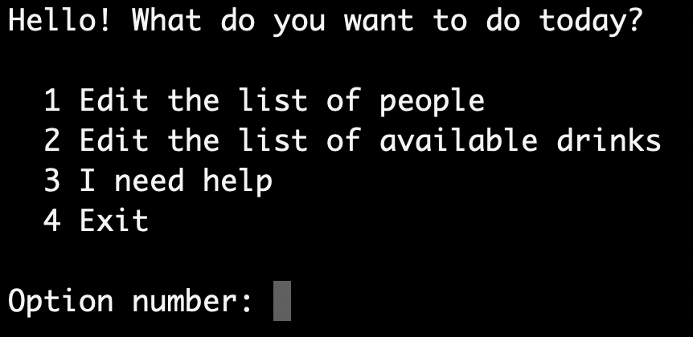
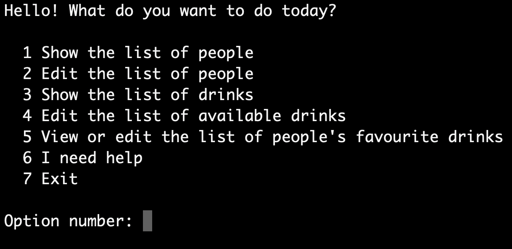
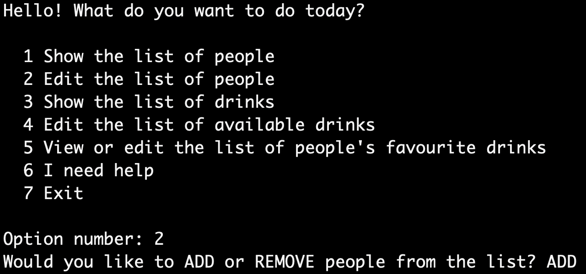
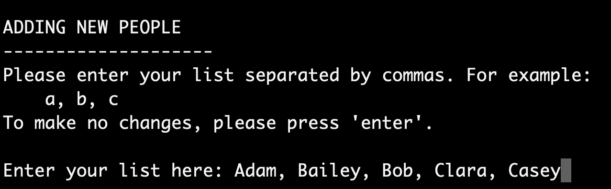
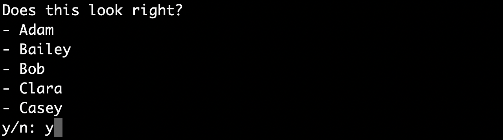
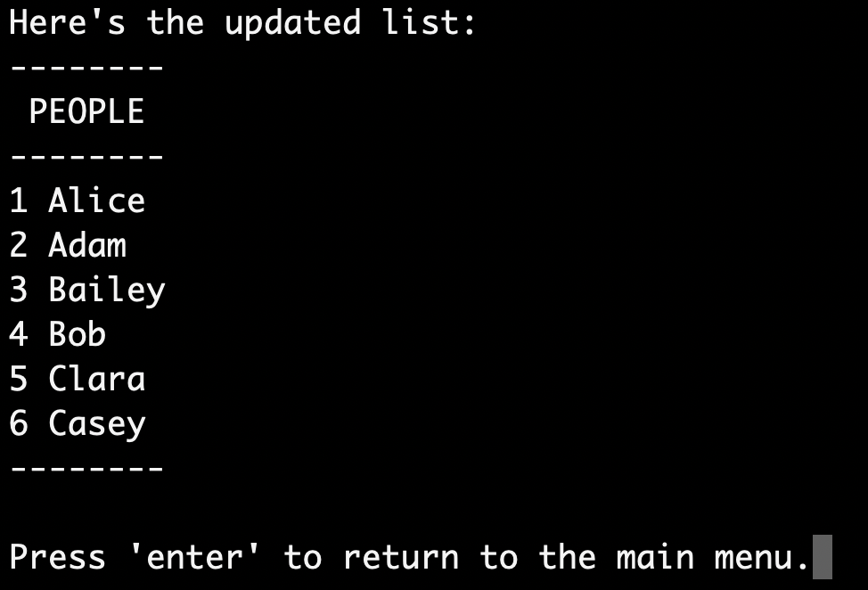

BrIW
How to use the application.
Use these handy links to jump to the section you need help with:
- The main menu
- Adding and removing people and drinks
- Viewing the people and drinks lists
- Adding a user's favourite drink
- Starting a new round
Menu
The main menu of BrIW changes depending on the state of the application. When you first use the application, you will have no people or drinks registered so you will only be able to edit these lists.
Once you have added at least one person and one drink, the menu will show all the possible options.
^ return to the top of the page. ^
Editing the People and Drinks Lists
To edit either of the lists, you will need to first choose whether you would like to add or remove items, and then enter a comma separated list of people/drink names. The application will ask for confirmation, and it will then show you the updated list.
   